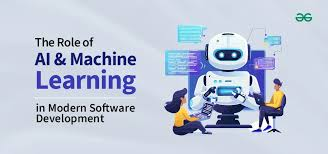
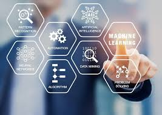

The Role of AI and Machine Learning in Modern Software Development
Creating computer systems that are naturally capable of carrying out activities requiring human intelligence is known as artificial intelligence (AI).
These programs mimic human decision-making, learning, and reasoning. Within artificial intelligence (AI),
machine learning (ML) is the study of algorithms and statistical models.
Without explicit programming, they allow computers to learn from data and gradually improve their performance.
The combination of AI and ML has changed software development, prompting advancement and innovation.
Artificial intelligence and machine learning have gained a lot of attention from software developers all over the years.
They are necessary due to their ability to reduce manual labor, optimize workflows, and increase overall efficacy.
AI and ML integration into software development processes is becoming essential as the need for intelligent applications grows.
In this article, we go over the crucial responsibilities these technologies play in influencing
the field of software development as well as the fascinating opportunities they present.

Artificial Intelligence (AI) and Machine Learning (ML)
It no longer restricted to being mere concepts and are finding application at societal levels to mitigate at least one layer of plaguing issues.
Both AI and ML are now being talked about increasingly and have even made it to academic circles as evident by their incorporation within university syllabi.
Research in AI and ML have also been giving rise to numerous startups in India. With innovation and application of AI-driven
solutions to societal sectors being the focal point, new-age technological disruption is inevitable.
Hence, problem solving becomes the focal point; through application of technology.

Future of Technology
Future technology is defined by rapid advancements in Agentic AI,
quantum computing, and edge computing, heavily supported by 5G connectivity.
Key trends include intelligent IoT, cybersecurity automation, sustainable tech, and human augmentation.
These innovations are reshaping industries through real-time data processing and autonomous decision-making.